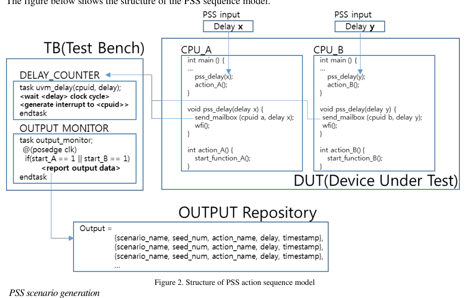

DVCon › US › 2022 › Verification
PSS action sequence modeling using Machine Learning¶

| Authors | Moonki Jang (Samsung Electronics), Myeongwhan Hyun (Samsung Electronics), Hyunkyu Ahn (Samsung Electronics), Jiwoong Kim (Samsung Electronics), Yunwhan Kim (Samsung Electronics), Dongjoo Kim (Samsung Electronics) |
| Venue | DVCon US 2022 |
| Topic | Verification |
| Type | PAPER |
| ID | ref-20261018-e710 |
Summary¶
The paper combines PSS-generated tests with linear regression over simulation-measured delay-vs-timestamp data, then solves the resulting linear Diophantine equations with the Extended Euclidean algorithm to find pss_delay values that align multiple actions to the same cycle, which it applies to reproducing a PCIe–ACE deadlock.
이 논문은 PSS로 생성한 테스트에서 얻은 delay-타임스탬프 데이터에 선형 회귀를 적용하고, 그 결과로 나온 선형 Diophantine 방정식을 Extended Euclidean 알고리즘으로 풀어 여러 action을 같은 사이클에 정렬하는 pss_delay 값을 찾는다. 이를 PCIe–ACE 데드락 재현에 적용한다.
Key Insights¶
- Cycle-accurate delay control is the enabling mechanism: pss_delay values are posted to a mailbox that the testbench polls every cycle, a cycle delay counter runs for the requested count, and an interrupt signals completion, which removes software loop jitter so the delay-to-timestamp relation stays linear.
- 사이클 정확도 있는 delay 제어가 핵심 메커니즘이다. pss_delay 값은 mailbox에 기록되고, TB가 매 사이클 이를 polling하여 지정된 사이클 수만큼 cycle delay counter를 동작시킨 뒤 완료 시 CPU interrupt를 발생시킨다. 이로써 SW loop jitter가 제거되어 delay와 타임스탬프의 선형 관계가 유지된다.
- Each action's output timestamp is fit as a linear function of its delay. The PCIe case study reports Action_1 y=8x1+1496546, Action_2 y=2x2+874352, and Action_3 y=3x3+874354, using a sweep of pss_delay from 0 to 100 in steps of 1.
- 각 action의 출력 타임스탬프는 delay의 선형 함수로 맞춰진다. PCIe 사례에서 보고된 식은 Action_1 y=8x1+1496546, Action_2 y=2x2+874352, Action_3 y=3x3+874354이며, pss_delay는 0부터 100까지 1 단위로 sweep했다.
- Aligning actions reduces to a linear Diophantine equation. For Action_2 and Action_3, 2x2 - 3x3 = 2 has particular solution X2=4, X3=2 and general solution X2=4-3k, X3=2-2k. At k=-103699 the delays become 311101 and 207400, and both actions land at timestamp 1496554, the same timestamp as Action_1 at pss_delay=1.
- action 정렬은 선형 Diophantine 방정식 문제로 환원된다. Action_2와 Action_3에 대해 2x2 - 3x3 = 2는 특수해 X2=4, X3=2와 일반해 X2=4-3k, X3=2-2k를 가진다. k=-103699일 때 delay는 311101과 207400이 되며, 두 action 모두 타임스탬프 1496554에 도달한다. 이 값은 pss_delay=1일 때 Action_1의 타임스탬프와 같다.
- The method is pairwise: the paper notes that solving three variables jointly (ax+by+cz=y) would be more efficient and proposes extending the Extended Euclidean algorithm. External, non-linear delay sources change the fitted intercept, so the linearity must be re-verified by re-gathering data before the creation stage.
- 방법은 쌍(pairwise) 단위다. 논문은 세 변수를 함께 푸는 것(ax+by+cz=y)이 더 효율적이라고 언급하며 Extended Euclidean 알고리즘의 확장을 제안한다. 외부 요인에 의한 비선형 delay는 fit된 intercept를 바꾸므로, creation 단계 전에 데이터를 다시 수집하여 선형성을 재검증해야 한다.
- The paper reports the predicted simultaneous delays but no measured confirmation run or quantitative coverage numbers; its claim of 'dramatically increased' coverage is qualitative.
- 논문은 예측된 동시 발생 delay 값은 보고하지만 측정된 확인 실행 결과나 정량적 커버리지 수치는 제시하지 않는다. '극적인' 커버리지 증가라는 주장은 정성적인 수준이다.
Detailed Summary¶
Background and Problem¶
- Pre-silicon PCIe–ACE protocol deadlock: a deadlock chain forms when (1) the PCIe RC buffer is full (Action_1), (2) a CPU Writeback is generated (Action_2), and (3) a snoop arises from a PCIe posted write (Action_3). All three must occur in a precise order.
- Pre-silicon PCIe–ACE 프로토콜 데드락: (1) PCIe RC 버퍼가 가득 찬 상태(Action_1), (2) CPU Writeback 발생(Action_2), (3) PCIe posted write에서 발생한 snoop(Action_3)이 동시에 정확한 순서로 일어날 때 데드락 체인이 형성된다.
- Prior PSS-based reproduction used thousands of random sequence combinations, and engineers manually adjusted constraints and added configurable delays to compare results. The SW-visible ordering did not match the HW timing.
- 기존 PSS 기반 재현은 수천 개의 랜덤 sequence 조합을 사용했고, 엔지니어가 constraint를 수동으로 조정하고 configurable delay를 추가해 결과를 비교해야 했다. SW에서 보이는 순서와 HW 타이밍이 일치하지 않았기 때문이다.
- The paper proposes automating delay selection: specify only the target condition for each action, then let ML derive the delays needed to align them.
- 본 논문은 delay 선택을 자동화하는 방법을 제안한다. 각 PSS action에 대해 목표 조건만 지정하면 ML이 action들을 정렬하는 데 필요한 delay를 도출한다.
Architecture and Methodology¶
- Delay injection: The PSS-generated C code calls
pss_delay(delay value + CPU id) before each target action. The value can be fixed or random, and the number of tests is configurable.
- Delay 주입: PSS가 생성한 C 코드는 각 target action 앞에서
pss_delay(delay 값 + CPU id)를 호출한다. 값은 고정하거나 랜덤으로 줄 수 있으며, 생성할 테스트 수도 설정할 수 있다.
- Cycle delay counter (TB):
pss_delaywrites to a mailbox memory area. The TB monitor polls it every cycle, counts the requested clock cycles, and raises a CPU interrupt on completion.
- Cycle delay counter (TB):
pss_delay는 mailbox 메모리 영역에 기록된다. TB 모니터는 매 사이클 이를 polling하고, 요청된 클럭 사이클 수만큼 카운트한 뒤 완료 시 CPU에 interrupt를 발생시킨다.
- Output monitor and repository: The monitor checks target conditions every cycle and logs test info, timestamp, and the action that caused the condition. A log analyzer collects these messages into the output repository, which serves as training data.
- Output monitor 및 repository: 모니터는 매 사이클 target 조건을 검사하고, test 정보, 타임스탬프, 조건을 유발한 action 정보를 로그로 남긴다. Log analyzer가 이 메시지를 모아 output repository에 저장하며, 이것이 학습 데이터가 된다.
- ML flow (four stages):
- Setup/Gathering: PSS batch-mode scripts create tests and run simulations with target conditions passed as a command argument.
- Learning: For each action, \(y = ax + b\) with slope \(a\) = Δtimestamp / Δdelay, fitted with
scipy.stats.linregress. - Analysis: Equal timestamps are required, e.g. \(a_1x_1+b_1 = a_2x_2+b_2 = a_3x_3+b_3\). For two actions this becomes \(ax+by=c\), solved with the Extended Euclidean algorithm. A solution exists only if \(\gcd(a,b)\) divides \(c\) (Bézout). The general solution is \(x = x_0 + k\,b/d\), \(y = y_0 - k\,a/d\).
- Creation: PSS regenerates tests with the predicted delays. The paper says the gathering and learning steps should be repeated to confirm the linear fit still holds.
- ML 흐름 (4단계):
- Setup/Gathering: PSS batch mode 스크립트로 테스트를 생성하고, target 조건을 command argument로 전달하여 시뮬레이션을 실행한다.
- Learning: action별로 \(y = ax + b\)를 구하며, 기울기 \(a\) = Δtimestamp / Δdelay이고
scipy.stats.linregress로 fit한다. - Analysis: 타임스탬프가 같아야 한다. 예를 들어 \(a_1x_1+b_1 = a_2x_2+b_2 = a_3x_3+b_3\). 두 action의 경우 \(ax+by=c\) 형태가 되어 Extended Euclidean 알고리즘으로 푼다. \(\gcd(a,b)\)가 \(c\)를 나눌 때만 해가 존재한다(Bézout). 일반해는 \(x = x_0 + k\,b/d\), \(y = y_0 - k\,a/d\)이다.
- Creation: 예측된 delay로 PSS 테스트를 다시 생성한다. 논문은 선형 fit이 여전히 유효한지 확인하기 위해 gathering과 learning 단계를 반복할 것을 권장한다.
flowchart LR
A[Setup: PSS scenario + target conditions] --> B[Gathering: batch PSS runs and simulation]
B --> C[Output monitor -> output repository]
C --> D[Learning: per-action linregress y = ax + b]
D --> E[Analysis: Diophantine solve via Extended Euclid]
E --> F[Creation: PSS test with predicted pss_delay]
E -. linearity re-check .-> B- PCIe case study: Delays were swept from 0 to 100 (step 1) and fitted as shown in Table II. The Action_2/Action_3 pair was solved first: \(2x_2 - 3x_3 = 2\) gives particular \(X_2=4\), \(X_3=2\) and general \(X_2 = 4-3k\), \(X_3 = 2-2k\). At \(k=-103699\), \(X_2=311101\) and \(X_3=207400\), and both actions reach timestamp 1496554. That value matches Action_1 at pss_delay=1, so the predicted delays are (1, 311101, 207400).
- PCIe 사례 연구: delay를 0부터 100까지 1 단위로 sweep하여 Table II와 같이 fit했다. Action_2/Action_3 쌍을 먼저 풀었다: \(2x_2 - 3x_3 = 2\)의 특수해는 \(X_2=4\), \(X_3=2\)이고, 일반해는 \(X_2 = 4-3k\), \(X_3 = 2-2k\)이다. \(k=-103699\)일 때 \(X_2=311101\), \(X_3=207400\)이며, 두 action 모두 타임스탬프 1496554에 도달한다. 이 값은 pss_delay=1일 때 Action_1의 타임스탬프와 일치하므로, 예측된 delay는 (1, 311101, 207400)이다.
Results and Conclusions¶
- The paper demonstrates the method on one case: the Action_2/Action_3 solution combined with Action_1's sampled timestamp gives a common timestamp of 1496554 for pss_delay values (1, 311101, 207400).
- 논문은 한 가지 사례로 방법을 보여준다. Action_2/Action_3 해와 Action_1의 샘플 타임스탬프를 결합하면 pss_delay 값 (1, 311101, 207400)에서 공통 타임스탬프 1496554가 나온다.
- The paper reports the prediction only. It does not show a measured re-run confirming simultaneous occurrence, and it gives no quantitative coverage numbers. The coverage claim is qualitative.
- 논문은 예측 결과만 보고한다. 동시 발생을 확인하는 측정된 재실행 결과는 제시하지 않으며, 정량적 커버리지 수치도 없다. 커버리지 향상 주장은 정성적이다.
- Stated limitations:
- The solver is pairwise. A joint three-variable Diophantine solver is suggested as more efficient.
- External delays add non-linear components that shift the intercept and invalidate later results. The linearity of the analysis range must be re-verified before creation.
- 명시된 한계:
- solver가 쌍 단위다. 세 변수를 함께 푸는 Diophantine solver가 더 효율적이라고 제안된다.
- 외부 delay는 intercept를 바꾸는 비선형 성분을 추가하므로, 이후 결과를 무효화한다. creation 전에 분석 구간의 선형성을 재검증해야 한다.
- Overall, the work turns manual constraint tuning for concurrent-event reproduction into a data-driven delay derivation on top of PSS and cycle-accurate simulation.
- 전반적으로 이 연구는 동시 이벤트 재현을 위한 수동 constraint 조정을 PSS와 사이클 정확도 시뮬레이션 기반의 데이터 기반 delay 도출로 대체한다.
Videos¶
[DVCON2022] PSS action sequence modeling using Machine Learning — Watch on YouTube · Video page